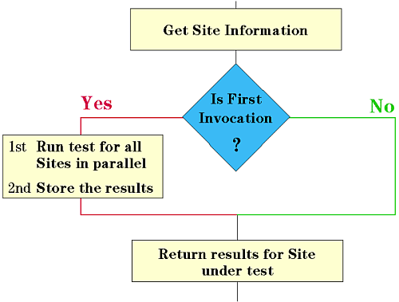

Outline
In a multisite testflow, a user procedure is executed sequentially for all sites. To optimize the user procedure for parallel execution, you must organize the code according to the following outline:

First, you need to get information on the site for which the user procedure is actually called.
The first execution of the user procedure (that is the execution for the first site) is used to make all necessary measurements and tests in parallel for all sites. The results are stored for quick access within later executions of the procedure.
When the procedure is then called again for the subsequent sites, the measurements and tests will not have to be run again. Instead, the procedure just returns the value stored for this site before.
To implement a strategy like this you must access site information from within the User Procedure, for example:
- How many sites are there?
- Is this the first execution of the user procedure in this testflow?
- The results of which site have to be returned?
This can be achieved using Command Interface (CI) calls, Test Programming Interface (TPI) functions, and firmware commands.
The following sections introduce these functions and commands. Finally, an example is given to show how to write user procedures optimized for parallel execution.
Functional changes
- Introduced before SmarTest 6.3.2